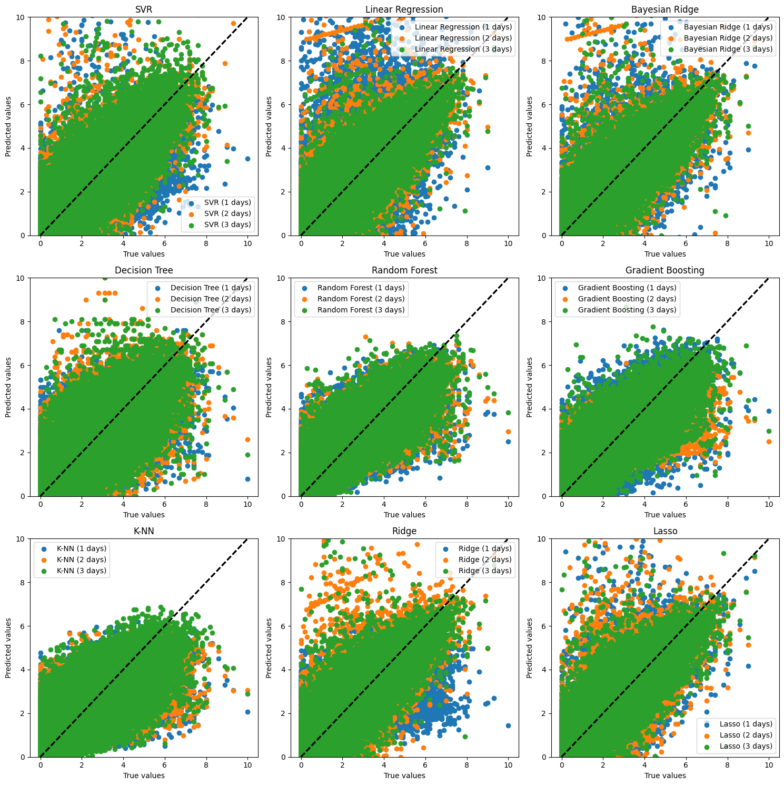
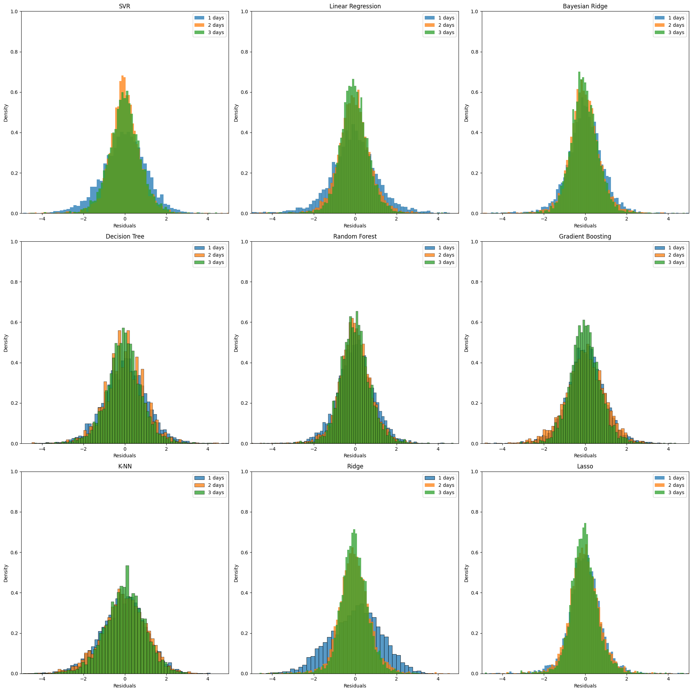

Exercise 4 (Training without Bayes Optimization)#
import pandas as pd
import warnings
warnings.filterwarnings('ignore')
dfWind = pd.read_csv('../data/data_wind_preprocessed1.csv')
dfWind.head()
| Hour | Wind direction (gr) | Wind speed (m/s) | Wind gust max (m/s) | Date | Relative humidity max | Relative humidity min | Temperature max (K) | Temperature min (K) | Relative humidity | Atmospheric pressure at station level (Pa) | Precipitation (m) | Atmospheric pressure max (Pa) | Atmospheric pressure min (Pa) | |
|---|---|---|---|---|---|---|---|---|---|---|---|---|---|---|
| 0 | 12 | 0.809017 | 1.8 | 3.8 | 2000-01-01 12:00:00 | 0.69 | 0.60 | 293.85 | 295.75 | 0.61 | 88820.0 | 0.0 | 88820.0 | 88770.0 |
| 1 | 13 | 0.965926 | 2.7 | 4.7 | 2000-01-01 13:00:00 | 0.62 | 0.55 | 295.65 | 297.35 | 0.55 | 88840.0 | 0.0 | 88840.0 | 88820.0 |
| 2 | 14 | 0.891007 | 2.0 | 4.9 | 2000-01-01 14:00:00 | 0.56 | 0.50 | 297.45 | 298.65 | 0.51 | 88810.0 | 0.0 | 88840.0 | 88810.0 |
| 3 | 15 | 0.848048 | 2.5 | 5.8 | 2000-01-01 15:00:00 | 0.52 | 0.44 | 298.15 | 300.55 | 0.44 | 88740.0 | 0.0 | 88810.0 | 88740.0 |
| 4 | 16 | 0.224951 | 2.4 | 5.8 | 2000-01-01 16:00:00 | 0.50 | 0.43 | 298.65 | 300.25 | 0.46 | 88650.0 | 0.0 | 88740.0 | 88650.0 |
dfWind.shape
(90276, 14)
from sklearn.linear_model import LinearRegression, Lasso, Ridge, BayesianRidge
from sklearn.tree import DecisionTreeRegressor
from sklearn.ensemble import RandomForestRegressor, GradientBoostingRegressor
from sklearn.neighbors import KNeighborsRegressor
from sklearn.preprocessing import MinMaxScaler, StandardScaler
from sklearn.svm import SVR
from skopt.space import Real, Categorical, Integer
n_col = dfWind.shape[1]
models_dict = {
'SVR': {
'model': SVR(),
'scalers': {
'scaler': Categorical([MinMaxScaler(), StandardScaler()])
},
'grid': {
'model__C': Real(0.0001, 10000),
'model__epsilon': Real(0.0001, 10000),
},
'best_params': {},
},
'Linear Regression': {
'model': LinearRegression(),
'scalers': {
'scaler': Categorical([None, MinMaxScaler(), StandardScaler()])
},
'grid': {},
'best_params': {},
},
'Bayesian Ridge': {
'model': BayesianRidge(),
'scalers': {
'scaler': Categorical([None, MinMaxScaler(), StandardScaler()])
},
'grid': {
'model__alpha_1': (0.000001, 0.01),
'model__alpha_2': (0.000001, 0.01),
'model__lambda_1': (0.000001, 0.01),
'model__lambda_2': (0.000001, 0.01),
},
'best_params': {},
},
'Decision Tree': {
'model': DecisionTreeRegressor(random_state=42),
'scalers': {
'scaler': Categorical([None])
},
'grid': {
'model__max_depth': Integer(1, n_col),
},
'best_params': {},
},
'Random Forest': {
'model': RandomForestRegressor(random_state=42),
'scalers': {
'scaler': Categorical([None])
},
'grid': {
'model__max_depth': Integer(1, n_col),
'model__n_estimators': Integer(10, 200)
},
'best_params': {},
},
'Gradient Boosting': {
'model': GradientBoostingRegressor(random_state=42),
'scalers': {
'scaler': Categorical([None])
},
'grid': {
'model__max_depth': Integer(1, n_col),
'model__n_estimators': Integer(10, 200),
},
'best_params': {},
},
'K-NN': {
'model': KNeighborsRegressor(n_jobs=-1),
'scalers': {
'scaler': Categorical([None, MinMaxScaler(), StandardScaler()])
},
'grid': {
'model__n_neighbors': Integer(1, 20),
},
'best_params': {},
},
'Ridge': {
'model': Ridge(random_state=42),
'scalers': {
'scaler': Categorical([None, MinMaxScaler(), StandardScaler()])
},
'grid': {
'model__alpha': Real(0.0001, 10000)
},
'best_params': {},
},
'Lasso': {
'model': Lasso(random_state=42),
'scalers': {
'scaler': Categorical([None, MinMaxScaler(), StandardScaler()])
},
'grid': {
'model__alpha': Real(0.0001, 10000)
},
'best_params': {},
},
}
number_of_days = [1, 3, 7, 14, 21, 30, 60, 90, 180, 365]
results_dict = {
name:{
numDays: {
'model': None, 'pred': [], 'test': [], 'cpu_time': None, 'MAPEs': [], 'R2s': [], 'RMSEs': []
} for numDays in number_of_days
} for name in models_dict
}
Hyperparametrization#
We find the best parameters only on the first set to avoid a too big data lake
from skopt import BayesSearchCV
from sklearn.pipeline import Pipeline
from copy import deepcopy
from time import time
import os
import pickle
path_tuning = '../pickle/wind/tuning_bs.pkl'
if not os.path.exists(path_tuning):
for name in models_dict:
print(f"Tuning {name}...")
model_dict = models_dict[name]
param_grid = {
**model_dict['scalers'],
**model_dict['grid']
}
for numDays in number_of_days:
X_train = dfWind.iloc[0:numDays*24].drop(columns=['Wind speed (m/s)', 'Date'])
y_train = dfWind.iloc[0:numDays*24]['Wind speed (m/s)']
steps = [
('scaler', None),
('model', deepcopy(model_dict['model']))
]
pipeline = Pipeline(steps)
search_cv = BayesSearchCV(pipeline, search_space=param_grid, n_iter=20, scoring='r2', cv=5, n_jobs=-1, random_state=42)
start = time()
search_cv.fit(X_train, y_train)
end = time()
results_dict[name][numDays]['model'] = search_cv.best_estimator_
model_dict['best_params'][numDays] = search_cv.best_params_
print(f"{numDays} days => {round(end - start, 1)}s => {search_cv.best_params_}")
print()
with open(path_tuning, 'wb') as f:
pickle.dump(results_dict, f)
else:
with open(path_tuning, 'rb') as f:
results_dict = pickle.load(f)
Tuning SVR...
1 days => 2.6s => {'model__C': 0.01, 'model__epsilon': 0.001, 'model__kernel': 'poly', 'scaler': MinMaxScaler()}
3 days => 3.9s => {'model__C': 0.1, 'model__epsilon': 0.1, 'model__kernel': 'poly', 'scaler': MinMaxScaler()}
7 days => 14.9s => {'model__C': 10, 'model__epsilon': 0.01, 'model__kernel': 'linear', 'scaler': MinMaxScaler()}
14 days => 80.5s => {'model__C': 1, 'model__epsilon': 0.1, 'model__kernel': 'linear', 'scaler': StandardScaler()}
Training#
from time import time
import os
import pickle
from utils import model_evaluation_lr
path_results = '../pickle/wind/results_bs.pkl'
if not os.path.exists(path_results):
dict_pred = {}
X = dfWind.drop(columns=['Wind speed (m/s)', 'Date'])
y = dfWind['Wind speed (m/s)']
for i, name in enumerate(models_dict):
model_dict = models_dict[name]
print(f"Training {name}...")
for numDays in number_of_days:
best_params_cleaned = {k.replace('model__', ''): v for k, v in model_dict['best_params'][numDays].items() if k.startswith('model__')}
pipeline = Pipeline(
[
('scaler', model_dict['best_params'][numDays]['scaler']),
('model', deepcopy(model_dict['model']).set_params(**best_params_cleaned)),
]
)
print(f'{numDays} days', end='')
start = time()
for j in range(0, dfWind.shape[0] - (numDays + 1)*24, 24):
X_train = X.iloc[j:j+numDays*24]
y_train = y.iloc[j:j+numDays*24]
X_valid = X.iloc[j+numDays*24:j+((numDays + 1)*24)]
y_valid = y.iloc[j+numDays*24:j+((numDays + 1)*24)]
pipeline.fit(X_train, y_train)
y_pred = pipeline.predict(X_valid)
eval_lr = model_evaluation_lr(y_pred, y_valid)
results_numDays = results_dict[name][numDays]
results_numDays['pred'] += y_pred.tolist()
results_numDays['test'] += y_valid.tolist()
results_numDays['MAPEs'].append(eval_lr['mape'])
results_numDays['R2s'].append(eval_lr['r2'])
results_numDays['RMSEs'].append(eval_lr['rmse'])
end = time()
cpu_time = round(end - start, 1)
print(f" => {cpu_time}s")
results_numDays['cpu_time'] = cpu_time
print()
with open(path_results, 'wb') as f:
pickle.dump(results_dict, f)
else:
with open(path_results, 'rb') as f:
results_dict = pickle.load(f)
Results#
results_overall = pd.DataFrame(columns=['Model', 'CPU time', 'MAPE', 'R2', 'RMSE'])
for name in results_dict:
model_dict = models_dict[name]
for numDays in model_dict['n_days']:
results = results_dict[name][numDays]
eval = model_evaluation_lr(results['pred'], results['test'])
new_row = {
'Model': f"{name} ({numDays} days)",
'CPU time': results['cpu_time'],
'MAPE': eval['mape'],
'R2': eval['r2'],
'RMSE': eval['rmse']
}
results_overall = pd.concat([results_overall, pd.DataFrame(new_row, index=[0])], ignore_index=True)
results_overall.sort_values('R2', ascending=False, inplace=True)
print(results_overall.to_string(index=False))
Model CPU time MAPE R2 RMSE
Gradient Boosting (3 days) 193.2 3.820000e-01 0.580 0.739
Random Forest (3 days) 34.5 5.642482e+11 0.574 0.737
Random Forest (2 days) 115.0 9.984037e+09 0.501 0.764
Decision Tree (3 days) 9.2 3.660706e+13 0.499 0.871
Decision Tree (2 days) 8.8 7.570750e+13 0.431 0.950
Bayesian Ridge (3 days) 12.0 4.420000e-01 0.415 1.179
Ridge (3 days) 10.1 6.820000e-01 0.410 1.194
Lasso (3 days) 10.9 4.080000e-01 0.385 1.281
Gradient Boosting (1 days) 165.7 5.600000e-01 0.353 0.909
Linear Regression (3 days) 8.0 5.430000e-01 0.313 1.527
Random Forest (1 days) 189.6 3.360000e-01 0.264 0.891
Lasso (2 days) 11.1 8.780000e-01 0.245 1.803
Bayesian Ridge (2 days) 11.9 5.520000e-01 0.243 1.724
Ridge (2 days) 10.3 6.790000e-01 0.223 1.917
Linear Regression (2 days) 10.5 7.560000e-01 0.215 1.970
SVR (2 days) 13.4 6.300000e-01 0.211 1.955
Lasso (1 days) 10.6 6.080000e-01 0.194 1.947
Bayesian Ridge (1 days) 12.1 3.349000e+00 0.161 2.061
K-NN (3 days) 78.1 5.492682e+11 0.155 0.962
Linear Regression (1 days) 10.5 1.812000e+00 0.123 2.672
Decision Tree (1 days) 8.2 1.008120e+12 0.082 1.060
SVR (3 days) 12.3 4.230000e-01 -0.000 72.985
SVR (1 days) 11.3 5.360000e-01 -0.000 836.514
Gradient Boosting (2 days) 18.0 3.200000e-01 -0.434 0.951
K-NN (2 days) 77.7 4.030000e-01 -0.517 1.083
K-NN (1 days) 10.4 4.310000e-01 -0.522 1.115
Ridge (1 days) 10.0 4.400000e-01 -1.563 1.250
import matplotlib.pyplot as plt
fig, axs = plt.subplots(3, 3, figsize=(15, 15))
axs = axs.flatten()
for i, name in enumerate(results_dict):
for numDays in models_dict[name]['n_days']:
results = results_dict[name][numDays]
y_pred = results['pred']
y_test = results['test']
axs[i].plot([0, max(y_test)], [0, max(y_test)], 'k--', lw=2)
axs[i].scatter(y_test, y_pred, label=f"{name} ({numDays} days)")
axs[i].set_ylim(0, max(y_test))
axs[i].set_title(f"{name}")
axs[i].set_xlabel('True values')
axs[i].set_ylabel('Predicted values')
axs[i].legend()
plt.tight_layout()
plt.show()

import matplotlib.pyplot as plt
import seaborn as sns
import random as rd
fig, axs = plt.subplots(3, 3, figsize=(20, 20))
axs = axs.flatten()
for i, name in enumerate(results_dict):
for numDays in models_dict[name]['n_days']:
pred = results_dict[name][numDays]['pred']
test = results_dict[name][numDays]['test']
residuals = rd.sample([val_pred - val_test for val_pred, val_test in zip(pred, test)], 5000)
sns.histplot(residuals, ax=axs[i], label=f"{numDays} days", stat='density')
axs[i].set_title(f"{name}")
axs[i].set_xlabel('Residuals')
axs[i].set_ylabel('Density')
axs[i].set_xlim(-5, 5)
axs[i].set_ylim(0, 1)
axs[i].legend()
plt.tight_layout()
plt.show()

from scipy.stats import norm, shapiro
df_gaussian_test = pd.DataFrame(columns=['Model', 'Mean', 'Std', 'p_value'])
for i, name in enumerate(results_dict):
for numDays in models_dict[name]['n_days']:
pred = results_dict[name][numDays]['pred']
test = results_dict[name][numDays]['test']
residuals = [val_pred - val_test for val_pred, val_test in zip(pred, test)]
mean, std = norm.fit(residuals)
_, p_value = shapiro(residuals)
new_row = {
'Model': f"{name} ({numDays} days)",
'Mean': round(mean, 2),
'Std': round(std, 2),
'p_value': round(p_value, 2)
}
df_gaussian_test = pd.concat([df_gaussian_test, pd.DataFrame(new_row, index=[0])], ignore_index=True)
df_gaussian_test.sort_values('Std', inplace=True)
print(df_gaussian_test.to_string(index=False))
Model Mean Std p_value
Gradient Boosting (3 days) -0.02 0.74 0.0
Random Forest (3 days) -0.01 0.74 0.0
Random Forest (2 days) -0.01 0.76 0.0
Decision Tree (3 days) -0.03 0.87 0.0
Random Forest (1 days) 0.00 0.89 0.0
Gradient Boosting (1 days) -0.00 0.91 0.0
Gradient Boosting (2 days) -0.01 0.95 0.0
Decision Tree (2 days) -0.02 0.95 0.0
K-NN (3 days) -0.02 0.96 0.0
Decision Tree (1 days) -0.00 1.06 0.0
K-NN (2 days) -0.06 1.08 0.0
K-NN (1 days) -0.09 1.11 0.0
Bayesian Ridge (3 days) -0.05 1.18 0.0
Ridge (3 days) -0.05 1.19 0.0
Ridge (1 days) -0.00 1.25 0.0
Lasso (3 days) -0.04 1.28 0.0
Linear Regression (3 days) -0.04 1.53 0.0
Bayesian Ridge (2 days) -0.05 1.72 0.0
Lasso (2 days) -0.05 1.80 0.0
Ridge (2 days) -0.05 1.92 0.0
Lasso (1 days) -0.06 1.95 0.0
SVR (2 days) -0.03 1.96 0.0
Linear Regression (2 days) -0.05 1.97 0.0
Bayesian Ridge (1 days) -0.07 2.06 0.0
Linear Regression (1 days) -0.07 2.67 0.0
SVR (3 days) -0.30 72.98 0.0
SVR (1 days) -2.81 836.51 0.0
best_model = 'Random Forest'
best_nb_days = 365
y_test = results_dict[best_model][best_nb_days]['test']
y_pred = results_dict[best_model][best_nb_days]['pred']
---------------------------------------------------------------------------
KeyError Traceback (most recent call last)
Cell In[12], line 4
1 best_model = 'Decision Tree'
2 best_nb_days = 7
----> 4 y_test = results_dict[best_model][best_nb_days]['test']
5 y_pred = results_dict[best_model][best_nb_days]['pred']
KeyError: 7
from plotly import graph_objs as go
plot = go.Figure()
plot.add_trace(go.Scatter(x= dfWind['Date'], y=y_test, mode='lines', name='True'))
plot.add_trace(go.Scatter(x= dfWind['Date'], y=y_pred, mode='lines', name='Predicted'))
plot.update_layout(title=f'{best_model} ({best_nb_days} days)', xaxis_title='Date', yaxis_title='Wind speed (m/s)')
plot.show()